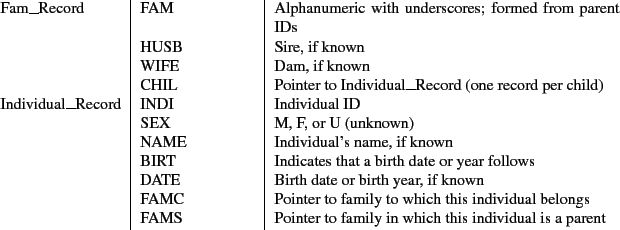
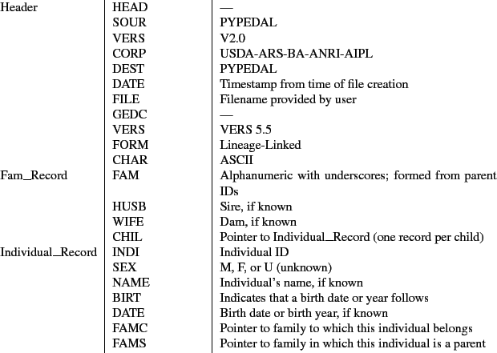

|
 |
 |
A Manual for use of PyPedal
A software package for pedigree analysis |
 |
 |
 |
B. GEDCOM File Handling
PyPedal is capable of importing from, and exporting to, GEDCOM 5.5 files using a subset
of data record and tag types from the standard (Table
).
Most of the information that can be
exchanged in GEDCOM files has no direct use in PyPedal, so important information from PyPedal's point-of-view is not lost. However, it's important to note that PyPedal's GEDCOM import and export is lossy! This means that information in a GEDCOM file is lost when importing the file, and data from PyPedal pedigrees is lost when exporting. There are many free and commercial packages for doing human genealogy that take full advantage of GEDCOM, so you might want to look at one if you need more advanced GEDCOM support than PyPedal provides.
GEDCOM 5.5 data records and tags imported by PyPedal.
Data Record Type & Supported Tags & Description
B.1

GEDCOM 5.5 data records and tags exported by PyPedal.
Data Record Type & Supported Tags & Description
B.2

Importation is done by reading the GEDCOM file, parsing out the supported tags into ``family'' and ``individual'', and using Python dictionaries (hash tables) to map everything down to individual records. Those individual records are then written to a file, the pedigree format string and pedfile variables are updated for the new file. That file is then loaded automatically. The downside is that you end up with two copies of each pedigree file, but disc space is cheap. I won't add an option for automatic deletion of the original GEDCOM file becuase of the lossiness of the import procedure.
The export process is uncoupled from the import process. You can export any pedigree
that PyPedal can read as a GEDCOM file regardless of the original source. Perhaps
some human types will be interested in some of the calculations that PyPedal can do,
or perhaps a dog breeder will do something unexpected, such as exporting to GEDCOM so
that they can use GRAMPS or something like that to manipulate their data. Who knows. Anyway, PyPedal supports two-way data flow.
Footnotes
- ... Description
-
- ... Description
-
Release 2.0.3, documentation updated on November 29, 2005
Revised May 15, 2012.
See About this document... for information on suggesting changes.